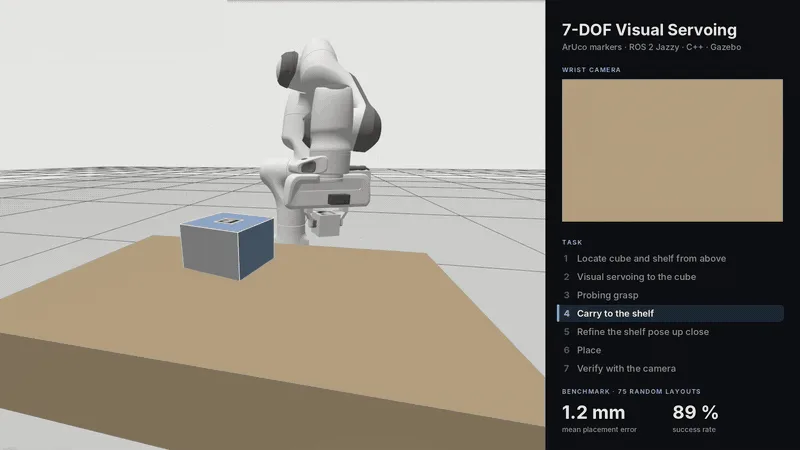

Independent project · 2026
Visual Servoing & Pick-and-Place with a 7-DOF Panda
A simulated Franka Panda in Gazebo finds a cube with its wrist camera, servos above it, grasps it and places it on a shelf. It is guided only by ArUco markers, starts every cycle from a new random layout, and is measured against Gazebo ground truth.
- A Cartesian velocity controller written from scratch with KDL and Eigen at 100 Hz: damped least-squares IK near singularities, null-space projection for the redundant 7th joint, and closed-loop pose feedback with anti-windup.
- Position-based visual servoing on ArUco poses (OpenCV, IPPE PnP) with low-pass filtering, outlier rejection and hysteresis between moving and holding.
- A pick-and-place state machine with a probing grasp, contact detection, coarse-then-close-up localization of the shelf and a camera check after placing; five ROS 2 packages with ros2_control and a CI build.
ResultOver 75 consecutive random layouts: 1.2 ± 0.9 mm mean placement error, 0.5° median yaw error, 89% success and 49 s per cycle.
- C++17
- ROS 2 Jazzy
- Gazebo Harmonic
- ros2_control
- KDL
- Eigen
- OpenCV ArUco
- Python